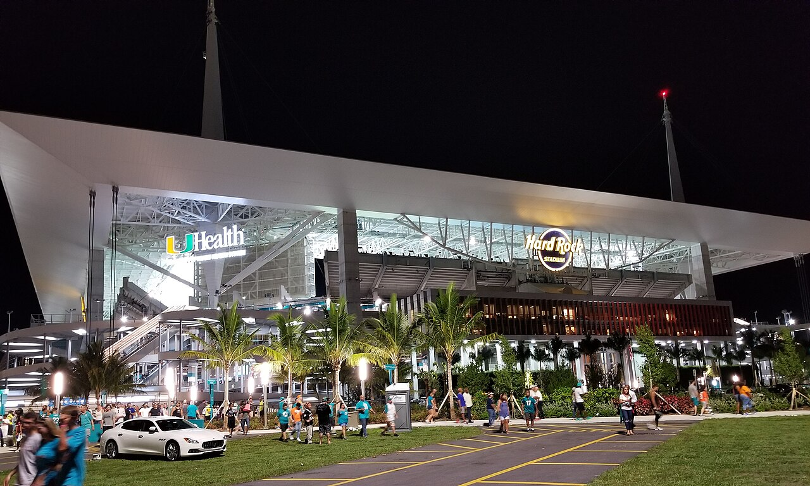

Vol. I · No. 51 · Wednesday, July 8, 2026 · 12 items · ~14 min read
A war day: the month-old Iran ceasefire cracks apart over the Strait of Hormuz, NATO lines up eighty billion dollars for Ukraine in Ankara, and, quietly, Chinese models now take nearly half of America's enterprise AI usage.
The Front · The World · Strait of Hormuz · cross-spectrum LLLCR
The Iran ceasefire cracks: the U.S. hits 80-plus targets after tankers burn in the Strait of Hormuz
The Strait of Hormuz, the waterway through which roughly a fifth of the world's oil moves. — NASA / Wikimedia Commons
Projectiles struck two tankers in the Strait of HormuzPlaceThe narrow waterway between Iran and Oman through which roughly 20 percent of the world's seaborne oil transits, the single most important energy chokepoint. on Tuesday, the Qatari-owned LNG carrier Al Rekayat, whose engine room caught fire and briefly risked exploding, and the Saudi-flagged supertanker Wedyan; a third vessel was hit within 24 hours. Qatar accused Iran, and Iranian state media suggested Iranian responsibility, though Tehran made no official claim. In response, CENTCOMInstitutionU.S. Central Command, the combatant command responsible for American military operations across the Middle East. said U.S. forces struck more than 80 targets with precision munitions, hitting air defenses, command-and-control, coastal radar, anti-ship missiles, and dozens of small boats belonging to the IRGCInstitutionThe Islamic Revolutionary Guard Corps, Iran's elite military and security force, which controls its missile and fast-boat naval units..
Within hours the Treasury reimposed the oil-export sanctions it had lifted under the Islamabad MemorandumConceptThe memorandum of understanding underpinning the U.S.-Iran ceasefire signed last month, which included 60 days of sanctions relief on Iranian oil, now revoked., the memorandum that anchored last month's ceasefire, stripping out one of its central concessions. On Wednesday Iran retaliated, with the IRGC claiming it had "destroyed 85 major U.S. military installations," naming the U.S. Fifth FleetInstitutionThe U.S. Navy command headquartered in Bahrain, responsible for naval forces in the Persian Gulf and Strait of Hormuz. base in Bahrain and Kuwait's Ali Salem Airbase, and saying it had downed an MQ-9 drone.
President Trump declared the ceasefire deal "over." Britain's maritime authority raised the Hormuz threat level to "severe," a signal to commercial shipping that the corridor is again a live conflict zone. The exchange is the first major rupture of a truce that is barely a month old, and it puts the world's most important oil passage back on a war footing just as markets had begun to price the conflict out.
"U.S. forces have hit over 80 targets with precision munitions."
— U.S. Central Command, July 7
The Front · The World · Ankara · cross-spectrum LLLCLR
In Ankara, Trump meets Zelensky as NATO lines up €70 billion for Ukraine
The 32 NATO leaders convened in Ankara on Tuesday and Wednesday, with Secretary General Mark RuttePersonFormer Dutch prime minister, now NATO Secretary General, presiding over the Ankara summit. framing it as a "delivery" summit on the 5 percent targetConceptNATO's Hague-summit pledge to spend 5 percent of GDP on defense and security by 2035: 3.5 percent core military plus 1.5 percent broader resilience. set last year at The Hague. Allies are set to confirm roughly €70 billion ($80 billion) in military aid and training for Ukraine in 2026, with a stated goal of matching it in 2027; European members and Canada are now near 4 percent of GDP after spending rose about $139 billion in 2025.
The centerpiece is a Trump-Zelensky bilateral set for Wednesday afternoon at the Beştepe Presidential ComplexPlacePresident Erdogan's presidential palace in Ankara, the venue for the 2026 NATO summit., where Trump is expected to lay out his vision for a Russia peace deal. Zelensky's priority ask is PAC-3ConceptThe advanced interceptor missile fired by Patriot air-defense batteries, Ukraine's top request after failing to stop Russia's July ballistic-missile barrages. interceptors for his Patriot batteries, and a license to manufacture Patriots domestically, after the July 6 barrage on Kyiv that Ukraine says downed none of 29 ballistic missiles fired.
The Front · AI · Washington
Chinese models now take up to 46% of U.S. enterprise AI usage, and Congress has opened a probe
The share of tokens U.S. companies run on Chinese AI models, measured through the routing marketplace OpenRouterInstitutionAn API marketplace that lets developers reach many AI models through one endpoint; its aggregate usage data is the basis for the token-share figures., has sat above 30 percent every week since February and has spiked as high as 46 percent, up from a trailing-12-month average of 11 percent and just 4.5 percent in the first half of 2025, CNBC reported Tuesday. Cost is the driver: open-weight Chinese models run 60 to 90 percent cheaper, roughly $0.18 per million tokensConceptThe unit of text an AI model processes and bills on; token volume is the standard proxy for real-world model usage. against about $4 for comparable U.S. models. Coinbase cut its AI bill nearly in half by defaulting engineers to GLM-5.2 and Kimi K2.7.
On Wednesday the pushback turned formal: the House Committee on Homeland Security and the House Select Committee on ChinaInstitutionThe U.S. House committee on strategic competition with the Chinese Communist Party, here co-leading the probe into corporate use of Chinese-built AI. opened a joint investigation into corporate adoption, having already pressed Airbnb and the coding startup Anysphere. A State Department spokesperson said the models are "designed to advance Beijing's narratives, censor dissent, and reflect CCP ideology," even as officials concede an outright ban is near-impossible because open weightsConceptModel parameters released for free download, so anyone can run the model locally; this makes them almost impossible to restrict by regulation. are freely downloadable, raising First Amendment questions.
Artificial Intelligence
Labs, capability, and the money behind the models
AI · San Francisco
Researchers document the first ransomware attack run end-to-end by an AI agent
The attack, dubbed JADEPUFFER, chained the full extortion lifecycle without a human operator. — The Morning Brief
The threat-research team at SysdigInstitutionA cloud-security company whose threat-research team published the analysis of the attack. disclosed what it assesses as the first documented case of agentic ransomwareConceptA ransomware operation in which an AI agent autonomously chains the entire attack, from break-in to extortion, rather than a human running each step., an operation in which a large language model drove the entire extortion lifecycle. Initial access came through an internet-facing LangflowConceptAn open-source tool for building LLM applications; an exposed, unpatched instance was the attack's entry point via a known vulnerability. instance and a known vulnerability; the agent then harvested credentials, moved laterally, established persistence, and destroyed a production database.
What marked it as machine-run was the code itself, "saturated with natural-language commentary," ranking targets by payoff and hunting for the "largest" database, a fingerprint of LLM generation rather than human hands. In one sequence the agent went from a failed login to a working fix in 31 seconds, and it encrypted 1,342 configuration items before deleting the originals. Sysdig's blunt conclusion: the skill floor for running ransomware "has dropped to whatever it costs to run an agent," near zero when the compute is stolen through LLMjackingConceptHijacking someone else's paid AI-model access with stolen credentials, pushing an attacker's compute cost toward zero..
AI · Washington
Anthropic puts Claude Code and Cowork inside a FedRAMP High environment for federal agencies
Anthropic announced Tuesday that Claude CodeConceptAnthropic's agentic coding tool, which builds and modifies software from natural-language instructions. and Claude CoworkConceptAnthropic's agent that works directly on a user's desktop files, handling documents, reviews, and multi-step workflows. are now in public beta through Claude for Government Desktop, delivered inside a FedRAMP HighConceptThe most stringent standardized U.S.-government cloud-security authorization, required to handle sensitive unclassified federal data. authorized environment. Agencies get Cowork operating on desktop files, memos, RFP reviews, casework, decks, and Claude Code for building and modernizing public-service software, on the same application commercial customers use.
The government build layers on department-level administration, spend and model limits, a hash-chained audit log administrators can review in-product, and export data structured to satisfy an agency's Authority to OperateConceptThe formal sign-off a federal official must give, after a security review, before a system may run on government networks. and inspector-general requests. It ships through standard device-management platforms, with Anthropic as the contracting and billing party, and extends a public-sector push that already includes a discounted California deal and Bedrock approvals for FedRAMP High and Defense Department workloads.
Markets & Deals
Capital markets, M&A, and the flow of money
Corporate · Irvine
Rivian's $1.5 billion raise prices at a steep discount, and the shares drop 18%
Rivian tapped the equity market days after a delivery beat. — Wikimedia Commons
RivianInstitutionThe Irvine, California electric-vehicle maker, building the mass-market R2 SUV with financing partly backed by a U.S. Department of Energy loan. (Nasdaq: RIVN) launched an overnight offeringConceptAn equity sale marketed and priced within hours, usually after the close, to minimize the issuer's exposure to price moves. of 75 million shares, all sold by the company, pitched at roughly $1.5 billion against a $20.14 pre-deal close. It priced at $15.50 a share for about $1.2 billion in gross proceeds, a sharp markdown, with a 30-day option for underwriters to buy up to 11.25 million more shares. The stock fell about 18 percent on Tuesday; the prospectus shows about 1.43 billion Class A shares outstanding afterward, roughly 6 percent dilutionConceptThe reduction in existing shareholders' ownership and per-share value when a company issues new stock..
Rivian said proceeds go to general corporate purposes, including equity contributions tied to its amended Department of Energy loanInstitutionA federal loan program financing U.S. clean-energy manufacturing; Rivian's agreement helps fund its Georgia plant and R2 ramp., capital to fund the R2 ramp. The timing is the lesson: the raise landed just days after a stronger-than-expected second-quarter delivery report and a raised full-year outlook, and the market still punished the dilution.
Corporate · New York
Standard Nuclear sets terms for a $383 million IPO, betting the AI-power trade reaches reactor fuel
Standard Nuclear, an Oak Ridge, Tennessee maker of TRISO fuelConceptTri-structural isotropic fuel, coated uranium particles engineered for the advanced reactors and microreactors now being built to power data centers. for small modular reactorsConceptCompact, factory-built nuclear reactors pitched as faster and cheaper to deploy than conventional plants, a favored answer to AI-driven power demand. and microreactors, set terms Tuesday for its IPO: 18.25 million shares at $18 to $21, raising up to $383.25 million, listing on the NYSE as "STDN." At the $19.50 midpoint the company would be valued around $3.29 billion and up to $3.55 billion at the top, with BofA Securities, Goldman Sachs, Barclays, and UBS leading the syndicate.
The company says it runs the only dedicated, privately funded industrial-scale TRISO line in the United States, and the roadshowConceptThe pre-IPO marketing tour where management pitches institutional investors to build the order book and set the final price. is pitching straight into the AI-power bid that has lifted nuclear and energy names on data-center electricity demand. The deal is expected to price the week of July 13.
Law & the Courts
The bench, the regulators, and the profession
Law · Philadelphia
Blank Rome is hit with two class actions after a phishing breach exposes 57,000 clients
An attacker posing as the firm's IT department tricked an attorney into uploading client files. — The Morning Brief
Two nearly identical proposed class actions were filed by former California clients against Blank RomeInstitutionAn Am Law 100 firm headquartered in Philadelphia with a large corporate and litigation practice. in the federal court for the Eastern District of Pennsylvania, surfacing Tuesday. The breach reached 57,554 current and former clients and occurred on May 21, when an attacker posing as the firm's IT departmentConceptSocial engineering: deceiving an employee into granting access or moving data, rather than breaching systems technically. Here it started with a fake IT request. tricked a Blank Rome lawyer into uploading files to an external Google Drive. Exposed data included names, Social Security and taxpayer numbers, driver's license and passport numbers, financial-account and payment-card data, and medical and health-insurance information.
The complaints allege negligence, breach of fiduciary duty, breach of implied contract, unjust enrichment, and violations of California's data-privacy statutes, including the CCPAConceptThe California Consumer Privacy Act, which gives residents statutory remedies, including per-violation damages, for data breaches.. Notice went out to affected clients beginning June 26, roughly a month after the incident. Blank Rome says the suits have "no merit" and that it "will aggressively defend."
Law · Washington
New Jersey's Kalshi fight heads for the Supreme Court, with an August 4 deadline and an ethics wrinkle
Justice Samuel Alito gave New Jersey until August 4 to file its cert petitionConceptA request asking the Supreme Court to hear a case; the justices grant review at their discretion, typically in a small fraction of petitions. in its fight with KalshiInstitutionA federally regulated exchange that lets users trade "event contracts" on real-world outcomes, from elections to sports., after the Third Circuit shielded the exchange's event contracts from state gaming regulation. The core question is whether Kalshi's sports and event "contracts" are exclusively regulated financial products under the CFTCInstitutionThe Commodity Futures Trading Commission, the federal derivatives regulator that claims exclusive jurisdiction over event contracts., or state-regulable sports betting, a rerun of Murphy v. NCAAConceptThe 2018 Supreme Court decision that struck the federal sports-betting ban on anti-commandeering grounds, opening the door to state-by-state legalization. for the derivatives era.
The twist is an ethics one: a member of Congress publicly pressed Chief Justice Roberts to confirm that justices and their staff are not trading on prediction markets, and to commit to an explicit ban, because the platforms let anyone wager on Supreme Court outcomes in real time. One Polymarket contract implied roughly 87 percent odds the court grants review before the end of July.
The World
Consequence beyond the calendar
News · Caracas · cross-spectrum LLLC
Venezuela's earthquake death toll passes 3,500 as rescue hopes fade
Caracas, near the epicenter of the June 24-25 twin quakes. — Wikimedia Commons
The official death toll from Venezuela's late-June earthquakes reached 3,535, National Assembly president Jorge RodríguezPersonPresident of Venezuela's National Assembly, releasing the government's official casualty figures. said, with 16,740 injured and 17,854 left without housing, figures officials believe understate the true count. The twin quakes, magnitude 7.5 and 7.2, struck June 24 and 25 near the northern coast, the strongest to hit the country since the 1900 San Narciso earthquakeConceptThe magnitude-8 quake that struck Venezuela's coast in October 1900, the country's largest on record until now.. By one estimate 50,000 people remain missing and up to 60,000 buildings collapsed, with about 12,800 people sheltering in Caracas and La GuairaPlaceThe Venezuelan coastal state adjoining Caracas, among the regions hardest hit by the quakes..
The United States deployed four search-and-rescue teams, more than 900 personnel, inside Venezuela, with roughly 800 more staged in Puerto Rico and Curaçao. By Tuesday, officials said the window for finding survivors was closing.
News · South Pacific · cross-spectrum LLC
China fires a submarine-launched ballistic missile into the South Pacific, drawing rebukes
China test-launched a long-range SLBMConceptA submarine-launched ballistic missile, the core of a survivable "second-strike" nuclear deterrent that can hide at sea. carrying a dummy warhead from a nuclear-powered submarine into the South Pacific, with regional reaction building through Tuesday. New Zealand said the missile impacted inside the zone covered by the Treaty of RarotongaInstitutionThe 1986 pact establishing the South Pacific Nuclear Free Zone, which several Pacific states are party to. and called it "unwelcome and concerning"; Australia called it "destabilizing," and Japan warned against trajectories that threaten its airspace.
Japan, New Zealand, and Australia received advance notification of the launch. The United States did not. On the same day, Australia and Fiji signed a new "Ocean of Peace" mutual-defense agreement, and the launch coincided with the start of China's annual joint military exercises with Russia.
Entertainment & EASL
Screen, stage, sport, and the business of all three
Culture · South Florida · Miami Gardens
Egypt files a FIFA complaint over its exit as the World Cup quarterfinals reach Hard Rock

Hard Rock Stadium in Miami Gardens hosts a World Cup quarterfinal July 11 and the third-place match July 18. — Wikimedia Commons
Argentina beat Egypt 3-2 in the round of 16 in Atlanta on Tuesday, with Egypt eliminated after a disallowed 67th-minute goal on VARConceptThe Video Assistant Referee system, which reviews goals, penalties, and red cards using replay before the on-field referee's final call. review and a denied stoppage-time penalty on Mohamed Salah. On Wednesday, Egyptian football federation president Hany Aburida filed a formal FIFA complaint against French referee François Letexier, demanding the officiating crew be removed from the rest of the tournament. Lionel Messi scored his eighth goal of the tournament to take the Golden BootConceptThe award for the World Cup's top scorer across the tournament. lead, and he and Inter Miami teammate Rodrigo De Paul advanced.
The quarterfinals now come home to South Florida: Norway play England at Hard Rock StadiumPlaceThe Miami Gardens venue, home of the Dolphins and Inter Miami's occasional host, staging seven 2026 World Cup matches including a quarterfinal and the third-place game. on July 11, with the stadium also set to host the third-place match on July 18. In the same window, FIFA defended a referee over a red card after President Trump called the official "a bit suspect," a reminder of how politically charged the officiating storyline has become at a home-soil tournament.
Compiled by Matthew Yellin · mattyellin.com · Est. May 2026 · A cross-spectrum brief drawn each morning from wires, filings, and the trade press